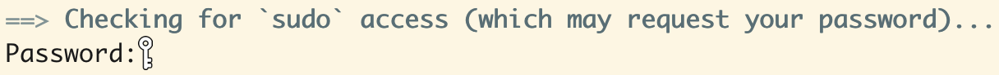
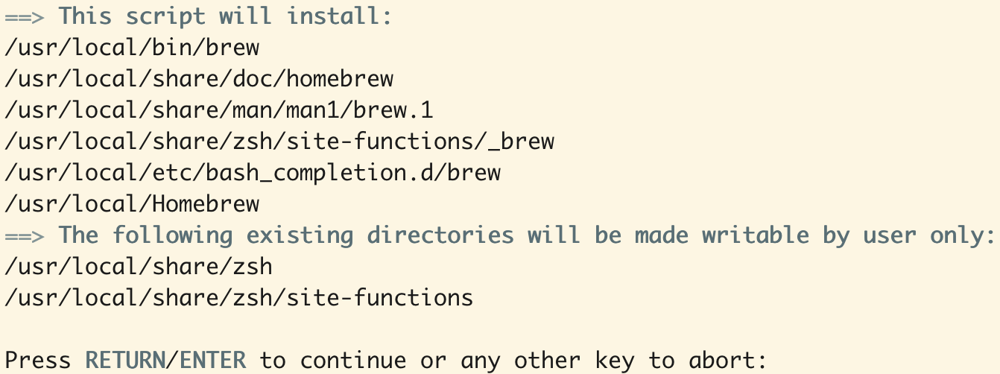

# paste the following command in terminal and hit return/enter
/bin/bash -c "$(curl -fsSL https://raw.githubusercontent.com/Homebrew/install/HEAD/install.sh)"Homebrew and Packages for Mac
If you find zsh, bash, and all those terminal commands to install stuff confusing, I was there when I first started out learning data science. With training focused on data analysis (more specifically, data transformation, exploratory data analysis, and statistical inference), I didn’t have much exposure to shell and environment. As long as the R packages I used for data analysis worked, I had no complaint. However, as my toolbox expanded over time, I found it important to have some basic understanding on how to manage my tools, which is what homebrew is for.
Installing Homebew
Homebrew installs and organizes packages for macOS and Linux. To use homebrew, we install it with:
You will be asked for login password:

Once you enter your password, you will be shown what are being installed and just follow the prompt: 
Even if homebrew is already installed, installation will still be run when you hit the return/enter key. After installation, you can check where and what version of homebrew is installed:
# check where homebrew is installed
which brew
# check version of homebrew
brew --versionBy default, Apple silicon chip Mac installs homebrew in /opt/homebew, while intel chip Mac installs it in /usr/local. As homebrew documentation explains, defaulting to those locations avoids sudo when install packages.
Installing Packages with Homebrew
brew install <PACKAGE_NAME>
# for example, installing PostgreSQL
brew install postgresqlThe packages will be downloaded to ~/Library/Caches/Homebrew, installed to their own directory /urs/local/Cellar (intel chip Mac), and their files symlinked (symbolic link, a file points to another file or directory in a different location) into /urs/local/bin or /urs/local/opt.
# list packages installed
brew list
# update Homebrew and packages
brew update
# uninstall package
brew uninstall <PACKAGE_NAME>Uninstalling Homebrew
/bin/bash -c "$(curl -fsSL https://raw.githubusercontent.com/Homebrew/install/HEAD/uninstall.sh)"Summary
- install homebrew
- install packages with homebrew
- uninstall packages and/or homebrew